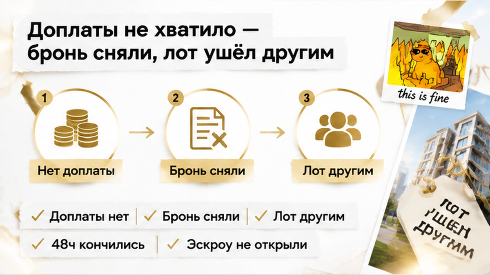

Семья в Тюмени внесла 50 000 ₽ за бронь новостройки — и через сутки узнала, что выбранная квартира подорожала ещё на 450 000 ₽. Ипотеку банк предварительно одобрил, первоначальный взнос и платёж считались под прежнюю цену. Но ДДУ ещё не подписали, эскроу не открыли, а срок брони продолжал идти. Когда доплатить разницу не получилось, бронь сняли, лот вернули в продажу, а 50 000 ₽ удержали как оплату услуги бронирования.
Я — Святослав Шакин, The Риэлтор, Тюмень. В Telegram разбираю такие ситуации без рекламного глянца: подписывайтесь на Telegram. Короткие заметки и связь есть также в MAX.
Сначала всё выглядело как обычная покупка квартиры в новостройке. Семья выбрала подходящий лот, заранее получила предварительное одобрение ипотеки и увидела в банковском расчёте привычные цифры: первоначальный взнос, сумму кредита и ежемесячный платёж.
После этого менеджер предложил оформить бронь. Идея понятная: на короткий срок убрать конкретную квартиру из продажи, зафиксировать планировку и заявленную стоимость, а затем спокойно пройти оставшиеся банковские формальности.
За услугу внесли 50 000 ₽. В документах были указаны выбранный лот и срок резервирования. Для семьи бронь выглядела мостиком между решением банка и основной сделкой: сначала закрепить квартиру, потом подписать договор участия в долевом строительстве — ДДУ — и открыть эскроу.
Но здесь есть важная граница. Одобренная ипотека не фиксирует цену у застройщика. Банк согласует кредит по тем параметрам, которые ему передали. Он не обещает, что продавец будет держать стоимость квартиры сколько угодно.
Если цена изменится до подписания ДДУ, придётся заново считать всю сделку: первоначальный взнос, размер кредита и ежемесячный платёж. Иногда покупателю нужно найти дополнительные собственные деньги, иногда — отказаться от выбранного лота.
Бронь тоже не равна ДДУ. Это отдельное соглашение, в котором должно быть написано, что именно резервируют, на какой срок и за что покупатель платит. Деньги за бронь не становятся средствами на эскроу. Специальная защита участника долевого строительства включается уже вокруг зарегистрированного ДДУ и счёта эскроу.
В другой истории перед ДДУ банк менял ставку, и из-за этого рос платёж. Здесь риск другой: банк не повышал ставку — изменилась цена самого лота.
Срок фиксации составлял 48 часов. Менеджер объяснил порядок просто: пока действует бронь, квартиру не продают другим и сохраняют за ней указанную цену. За двое суток покупатели должны были подготовить документы, согласовать детали с банком и перейти к ДДУ.
Для семьи этого казалось достаточно. Предварительное «да» от банка уже было, поэтому главным препятствием выглядела обычная бумажная работа. Но таймер брони запускается не тогда, когда покупатель почувствовал себя готовым, а в тот момент, который указан в оферте.
Фраза «цена заморожена» тоже не всегда означает безусловную гарантию. Рядом могут быть пункты о скидке, способе оплаты, рассрочке или субсидированной ипотеке. Если одно из условий меняется, застройщик может попытаться пересчитать стоимость.
Поэтому нужно выяснить, что именно фиксируют на 48 часов: конкретный лот, его цену, скидку или только возможность первым выйти на подписание ДДУ. Это разные обещания.
Если бронь заканчивается вечером в пятницу, а банк готов подтвердить документы только в понедельник, календарь уже становится частью риска. Два дня на бумаге могут оказаться гораздо короче в реальной сделке.
В этой истории за 50 000 ₽ действительно закрепили квартиру, планировку и заявленную цену на двое суток. Но фиксация действовала только в рамках оферты бронирования. Она не заменила ДДУ и не открыла эскроу.
На следующий день семья получила сообщение от менеджера: стоимость выбранной квартиры изменилась. До окончания 48-часовой брони оставались сутки, но цена стала выше на 450 000 ₽.
Это было не банковское решение. Процентная ставка не менялась, банк не отзывал предварительное одобрение. Подорожал сам лот по условиям сделки с застройщиком и тем пунктам, которые были в оферте.
Для покупателей ситуация выглядела странно. Ипотека уже одобрена, планировка выбрана, деньги за резервирование внесены, а квартира вроде бы должна была быть недоступна для других. Оставалось только согласовать документы.
Но бронь не стала ДДУ. Она действовала ровно так, как было написано в документе. Если цена зависела от акции, определённой схемы оплаты или сохранения скидки, одной фразы менеджера о «заморозке» могло оказаться недостаточно.
Это не значит, что любое повышение цены автоматически законно. И не значит, что покупатель заранее согласился на любую сумму. Но разбираться в такой ситуации приходится прежде всего по тексту оферты: была ли цена закреплена без условий, какие основания для пересмотра указаны и как продавец должен уведомлять покупателя.
Пока семья пыталась понять, где найти дополнительные деньги и возможно ли сохранить прежнюю стоимость, срок бронирования продолжал идти.

У семьи оставался выбор: искать ещё 450 000 ₽ или отказаться от квартиры. Быстро закрыть такую разницу не получилось. Предварительное одобрение ипотеки здесь не спасало: банк считал прежнюю стоимость и прежнюю финансовую схему.
Пока покупатели уточняли условия, 48 часов закончились. Застройщик снял резерв, а квартиру вернул в продажу. Позже лот забрали другие покупатели.
Семья потеряла не квартиру в юридическом смысле — ДДУ с ней так и не заключили. Она потеряла возможность купить конкретный лот по прежней цене. Это важная разница: до подписания ДДУ и открытия эскроу сделка ещё не дошла до этапа, где закрепляются основные гарантии участника долевого строительства.
Внесённые 50 000 ₽ тоже не попали на эскроу. По условиям оферты их удержали как плату за услугу бронирования.
Одни и те же слова — «платная бронь» — в разных документах могут означать разное. Если деньги являются авансом в счёт квартиры, вопрос о возврате оценивается одним образом. Если это отдельная услуга, застройщик или агент может заявить, что услуга оказана в момент резервирования лота.
Поэтому важно смотреть не на бытовое слово «бронь», а на юридическое название платежа и последствия отказа. В другой сделке покупатель может вернуть деньги, а в этой — столкнуться с удержанием той же суммы.
Отдельно стоит различать три ступени: бронь на короткий срок, ДДУ с правами участника долевого строительства и эскроу для денег по ДДУ. Пока сделка остановилась на первой, защита эскроу ещё не работает. Похожая точка возникает, когда ипотеку уже одобрили, но эскроу так и не открыли.
Многие рассуждают так: раз ДДУ не подписан, значит, все деньги должны автоматически вернуться. Но 50 000 ₽ переводились не на эскроу и не по зарегистрированному ДДУ. Их внесли по отдельным условиям бронирования.
Решающим стало то, как платёж назван в оферте. Аванс — это деньги в счёт будущей покупки. Оплата услуги бронирования — другая конструкция: продавец может утверждать, что услуга оказана, когда квартиру временно убрали из продажи.
В офертах встречаются условия о невозврате при отказе покупателя, возврате только в течение определённого срока или удержании после окончания брони. Бывает и возврат при отказе банка. Поэтому одинаковая сумма в двух документах может иметь разные последствия.
В описанной сделке 50 000 ₽ удержали именно как стоимость услуги бронирования. ДДУ не подписали, эскроу не открыли, кредит не выдали. Государственная защита, связанная с долевым строительством, ещё не включилась.
Платная бронь сама по себе не означает обман. Она может действительно удерживать конкретный лот на короткий срок. Но воспринимать её как замену ДДУ или как обещание неизменной цены при любых обстоятельствах опасно.
Бронь на двое суток и внезапные +450 тысяч: вы бы доплатили, чтобы не потерять планировку, или искали бы другой ЖК — даже если ипотека уже одобрена?
Оферту нужно читать до оплаты, а не после сообщения о подорожании. Важны не только сумма и срок, но и то, что именно обещают за эти деньги.
| Что проверить | Как должно быть понятно написано | Что может произойти иначе |
|---|---|---|
| Конкретный объект | Корпус, секция, этаж, строительный номер, площадь | Резервируют только тип планировки или неопределённый объект |
| Цена | Указана конкретная сумма и её фиксация на весь срок | Есть ссылка на изменяемый прайс-лист |
| Дата окончания | Названы точные дата и время | Написано только «48 часов» без ясного отсчёта |
| Природа платежа | Понятно: аванс или отдельная услуга | Есть только слово «бронь» |
| Пересмотр цены | Указаны конкретные основания и порядок уведомления | Стоимость меняется из-за акции, ипотеки или способа оплаты |
| Возврат | Прописано, когда деньги возвращают и что удерживают | Плата объявлена невозвратной при любом отказе |
| Окончание брони | Понятно, когда лот возвращается в продажу | Покупатель узнаёт об этом постфактум |
| Получатель денег | Организация совпадает с договором и реквизитами | Деньги уходят третьему лицу без ясной ответственности |
Особенно внимательно нужно читать пункты о субсидированной ипотеке, рассрочке, скидке и изменении способа оплаты. Формально подорожание может быть связано не с «внезапным решением», а с применением такого условия. Но для семьи результат тот же: одобренного бюджета больше не хватает.
Менеджеру стоит задать прямой вопрос: «Если ипотека будет оформляться на тех условиях, которые сейчас предварительно одобрены, какая сумма будет закреплена в договоре бронирования?» Ответ лучше увидеть в оферте или приложении к ней, а не оставить только в переписке.
Если цена изменилась после оплаты, не нужно сразу подписывать новый документ и переводить разницу. Сначала сопоставьте оферту, платёжное поручение, условия акции и переписку с менеджером. Иногда спор возникает не вокруг самого права менять прайс, а вокруг того, была ли цена действительно зафиксирована.
Если перед бронью остались вопросы по цене, сроку или возврату, можно отправить документ на разбор Святославу Шакину, The Риэлтор, Тюмень — в Telegram или MAX. Лучше проверить одну спорную формулировку до перевода денег, чем выяснять её смысл после окончания таймера.
Граница здесь простая: прочитать оферту до перевода 50 000 ₽. В ней должны быть отдельно зафиксированы объект, цена и срок. Если стоимость зависит от акции или способа оплаты, это должно быть видно заранее.
Одобрение ипотеки не заменяет проверку договора. Новостройки в Тюмени покупают и сейчас — спокойнее, когда сначала разбираются, что фиксирует бронь и за что берут деньги. Проверка до брони оставляет выбор у покупателя. После перевода денег выбор часто сужается до срочной доплаты или потери лота.